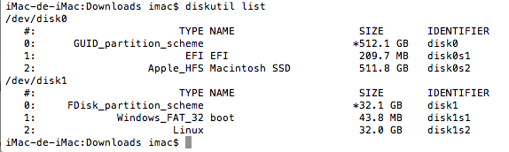
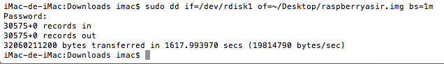

Uno de los problemas que se puede presentar al usar mucho la Raspberry Pi es que se llegue a un punto en que algo salga mal y se quede sin acceso al sistema. Si es una Raspberry Pi que no está en uso continuo, se puede volver a instalar el sistema de cero, pero si, como en este caso, se usa la Raspberry Pi para alojar diferentes servicios como el servidor web etc., un error puede dejar la red entera fuera de servicio. En estos casos contar con una vía rápida de recuperación del sistema se vuelve fundamental.
Se recomienda hacer un clon de la tarjeta SD. Se sabe que las tarjetas SD tienen una vida útil “reducida” de número de escrituras y al usarlas como sistema operativo (que constantemente está escribiendo en la tarjeta), ésta se ve mermada. La idea es clonar la tarjeta SD para poder re-flashearla con el sistema operativo exactamente igual a como estaba antes de la copia. Naturalmente, esto no es tan sencillo como conectar la tarjeta SD al ordenador y copiar su contenido, ya que el ordenador no reconocerá todo su contenido.
Lo primero que hay que hacer es extraer de forma correcta la tarjeta SD de la Raspberry Pi a través de SSH, hay que apagar la Raspberry Pi usando el comando $ sudo shutdown -h now, desconectar la fuente de alimentación y retirar la tarjeta SD, para evitar problemas de integración en los datos almacenados, a partir de aquí se explican varios métodos y en varios sistemas operativos

En la imagen superior, se observa que la tarjeta SD corresponde a /dev/disk1, por lo que se ejecutará el comando dd sobre él.
$ sudo dd if=/dev/rdisk1 of=~/Desktop/raspberryasir.img bs=1m
Donde if significa ‘input file’ y se asigna la ruta de la propia tarjeta SD. Nótese que se añade el prefijo ‘r’ a ‘disk’ para indicar dónde se sitúa el almacenamiento raw de la tarjeta: /dev/rdisk1. Es muy importante hacerlo así. Por su parte, of hace referencia al ‘output file’ y se especifica la ruta absoluta del destino donde se quiere guardar la imagen de la tarjeta SD. En este caso, creará un fichero de nombre raspberryasir.img en el escritorio. El símbolo ~ de Unix representa el directorio home del usuario. Por último, bs significa ‘block size’, para este parámetro se ha escogido 1MB porque es el que aconsejan utilizar con el comando dd.
Nota: el comando dd requiere ser ejecutado con permisos de administrador, por tanto, se hace uso de sudo y solicitará la clave de administrador cuando se ejecute (la clave del usuario de Mac OS X).
Este proceso no es algo inmediato, los datos se han de transferir al ordenador y es una operación que lleva sus minutos, se aconseja un poco de paciencia. Como ejemplo, la tarjeta que se ha utilizado es de 32GB y ha tardado al rededor de 26 minutos. A continuación el mensaje resultante de la instrucción ejecutada:

Y con esto, finalmente, se mostrará en el escritorio el fichero que se ha especificado como output file: raspberryasir.img y ocupará el mismo espacio que el de la tarjeta SD, 32GB, por tanto se aconseja comprimir la imagen, ya que se reducirá hasta en un 90% su tamaño. Para la restauración de la imagen se pueden seguir los pasos explicados en el anexo 2
Aquí se vuelve a utilizar la herramienta Win32 Disk Imager igual que en el anexo 2.
Los pasos a seguir serán los siguientes:
Esta página forma parte del proyecto Mini servidor para prácticas ASIR por Nacho López, que se distribuye bajo una Licencia Creative Commons Reconocimiento-CompartirIgual 4.0 Internacional (CC BY-SA 4.0).